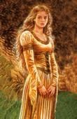

Les Terres de Kirin Tor
Lalita
Points : 1

Joué par :
[ Information masquée ]
Age : 15 ans
Lieu de naisance : région de Stormwind
Sexe : Femme
Race : Humain
Faction : Alliance
Formation : Guerrier
Niveau : 20
Guilde :
Artisanat 1 : Couturier
Artisanat 2 : Herboriste
Envoyer un MP
Informations hrp : D'environ 1M56, faisant ses 15 ans, Lalita est frêle, très mince, très pâle, ses longs cheveux blancs descendant jusqu'aux bas des reins ; de multiples cicatrices de piqures parsèment son corps, ainsi que quelques cicatrices de lames au cou et au ventre.
Septième Ère [2]
Lune de la Force [2]
Décade du Panda
Décade du Gorille
Décade de l'Ours [2]
Une supplique pour Elune
Alors que le crépuscule dardait ses derniers reflets dans le ciel mauve de la bienheureuse ville de Darnassus, et que les derniers passants regagnaient leur demeures pour la nuit, une petite silhouette, la nuque courbée, les épaules tassées, se dirigeait aussi discrètement que lui permettait son énorme épée sanglée solidement sur son dos vers le Temple fleuri dElune.Le papillon et l'épée
Arrivée à lentrée, elle sembla marquer une courte hésitation ; comme surmontant une répugnance manifeste, la jeune fille continua son chemin, pénétrant le saint lieu, se réfugiant derrière un buisson de soleillette avec une rougeur fugitive sur son visage encore enfantin.
Cachant son visage entre ses mains brusquement, dévoilant deux petites oreilles pointues, la demi-elfe se laissa alors à des quelques sanglots étouffés, puis, jetant un coup dil à la statue imposante du Puit de Lune, se calma, soufflant posément pour sapaiser.
Enlevant alors son épée, elle tira dun repli de sa cotte de maille légère une plume et un parchemin quelle posa sur une pierre, prenant soin de ne pas froisser la feuille. Regardant la statue avec un espoir intense, joignant ses mains très fort, ladolescente se décida enfin à se mettre à louvrage
Ô Déesse Elune,
Je nai jamais cru en vous, daussi loin que me permettent mes souvenirs. Mais las ! Mon âme ne peut supporter plus, Ô Déesse. Je vous supplie, aidez-moi Aidez un monstre comme moi
Je me nomme Lalita Kalang, Déesse Elune, et jai eu quinze ans le mois dernier. Maman était une elfe, et elle avait les mêmes cheveux que moi. Je ne me souviens pas delle, mais aujourdhui, je ne me souviens pas de grand-chose. Père nest plus humain depuis... je ne sais plus. Et je dois fuir sa présence, désormais. Avant, il me faisait si peur que ne pouvais partir de son influence, et ni mes larmes ni mes efforts pour lui obéir nengendrait indulgence. Il veut ma mort, mais je ne veux pas devenir un monstre pire quun sang impur Ô Elune, javais rencontré de si bons amis... Ils étaient si incroyablement gentils, quil me semblait vivre un rêve, un rêve merveilleux, où le monde semblait maccepter, enfin. Où je navais plus peur. Ils ne parlaient pas comme Père, Ô Déesse !
Mais aujourdhui, le rêve est terminé. Je le savais, Ô Grande Elune ! Je savais que cela arriverai, mais je ne veux plus revivre le long cauchemard que mon corps et mon esprit sentent, brûlant comme un fer rouge sur lépaule dun condamné Je ne veux plus pleurer, Déesse Elune.
Ayez pitié ! Messire Salazare est mort, et Nakhim est parti. Mon prince est parti et lui aussi, il risque de se faire tuer. Sa sur me fait si peur, et son amie Isaldie est pire encore Messire Lianrhyn est le seul qui me reste, Ô Elune. Et lui aussi, il est maudit !
Je naccepte plus cette fatalité qui me poursuit, Déesse.
Cette vie nest que sang et tourment, et je veux la quitter !
Ô Déesse, ayez pitié de Lalita... délivrez-moi de mon serment délivrez-moi du malheur
La jeune fille sarrêta décrire, le visage brouillé de larmes. Elle se recroquevilla un instant, se balançant doucement davant en arrière, puis se ressaisit tristement. Dénouant ses cheveux blancs comme de la neige scintillante au soleil, elle roula le parchemin, lentourant de son ruban bleu, comme une offrande delle-même, puis, sortant de sa cachette, elle le déposa au pied du Puit de Lune désert.
Puis sen fut, petite silhouette perdue dans la nuit
Une musique entraînante, forte et joyeuse, séchappait de la salle de bal, courait dans les couloirs de la demeure illuminée, sinsinuant sous la porte dun boudoir charmant.
Une jeune femme en sortit, radieuse, ses cheveux blancs brillants nattés, retenus par une barrette dargent représentant un papillon, sa crinoline de soie verte sombre bruissant à chacun de ses petits pas. Un homme savança, lapostropha gaiement, sinclinant galamment.
- Jolie mie, laissez-moi vous accompagner Vous êtes divine, chère.
Lintéressée se mit à rire, coquette, inconsciemment sûre de son charme.
- Voyons, Halrick
- Non, Lalita ! je me dois de vous demander votre main. De si longues années que je me languis de vos beaux bras blancs, de tant dheures où jeus désiré vous faire mienne, à jamais ! Ce bal, charmante belle, est tout en votre honneur, en consécration de votre beauté, de votre esprit Jaimerai quil vous marque comme le jour le plus heureux de votre vie !
De nouveau, la jeune femme se mit à rire, plus tendrement. Posant ses yeux sur le couloir de marbre blanc, sur les tapis colorés, sur les velours chamarrés des tentures, elle vit le décor se changer en une salle aux dimensions princières, la lumières des chandeliers précieux éclairant à travers une grande baie vitrée des jardins sombres et tortueux, où de longues silhouettes blanches dansaient en riant, scandant des poésies démodées.
Fermant alors les yeux, Lalita Kalang se mit à tourbillonner à son tour, enivrée, de plus en plus vite, de plus en plus tendrement, les bruits se fondant un à un dans un immense flou lumineux, où seuls les battements de son cur la retenaient au monde, où seules des ombres allègres se mêlaient à la confusion de ses sens, lui parlant de choses vagues quelle nécoutait pas, il fallait quelle danse, danser, tourner, encore, encore, entre ces bras aimés !
Soudain, le vide, le noir.
Elle porta sa main gantée de plates à son front, sentit la fraicheur familière dune épée, ouvrit les yeux, regardant avec calme la foule déchainée devant elle. Elle se mit en garde, ressentit la force infuser ses veines, gonfler son cur dun courage encore inconnu, lexaltation croissante de lappel du combat et de la gloire envahir son âme. Elle fendit devant son adversaire décontenancé, le désarma, le força à se mettre à genou, en un instant. Dun geste ample, elle leva lépée en lair, la fit reluire dun battement de paupière dun éclat bleuté, poussa un cri de victoire dune voix qui nhésitait pas, qui navait jamais bégayée. Relevant son heaume aisément, sa chevelure inonda soudainement ses épaule jusquà la chute de ses reins ; et un rire de joie, un rire de fierté, un rire serein séchappa de la jeune femme, effaçant la honte, effaçant la timidité, marquant linfinie fierté dune âme solide et délicate, dune âme aspirant à se libérer de ses chaînes du passé !
Les fantômes lentourèrent, formant un voile opaque entre le tournoi et ses yeux bruns. Il fallait sacharner, sacharner, ne peut pas pleurer, lutter, lutter ! Son corps dadulte était rempli dénergie, la peur était oubliée, reléguée au fond, il fallait oublier, il faut oublier ! Père ! Ne mabandonne pas ! Redeviens mon père ! Lalita frappa dans le vide, une fois, deux fois, lacérant les fantômes hilares, encore, encore, les mains serrées sur son épée. Gagner le tournoi !
Soudain, le calme, lapaisement.
Lalita ouvrit les yeux. Les courbures familières dune maison elfique, le courant dair parfumé et froid froid ? Lalita, en robe de velours bleu, en souliers de peau, si fins quelle sentait toutes les aspérités du bois rustique sous ses pieds, se précipita plus avant dans la maison, un sentiment durgence étreignant son cur. Son épée apparut dans sa main, et la jeune femme aux cheveux blancs sélança dans les escaliers, se boucha soudain les oreilles sous un son incongru. Une clochette ? Que faisait une clochette ici ?
Ladolescente ouvrit les yeux, sauta de son lit dun bond, effarée, mal éveillée, cherchant à savoir doù venait ce son. Ce son Madame de Mambourg-Ecleocle ! Et son petit déjeuner ! Elle ne sétait pas réveillée ! Lalita enleva sa chemise de nuit, se vêtit précipitamment dune robe prise au hasard, et fila dans la cuisine en bégayant des excuses
Lune d'Agilité
Décade du Tigre
Décade du Singe
Décade du Faucon
Lune de l'Esprit
Décade de la Chouette
Décade de la Baleine
Décade du Lapin